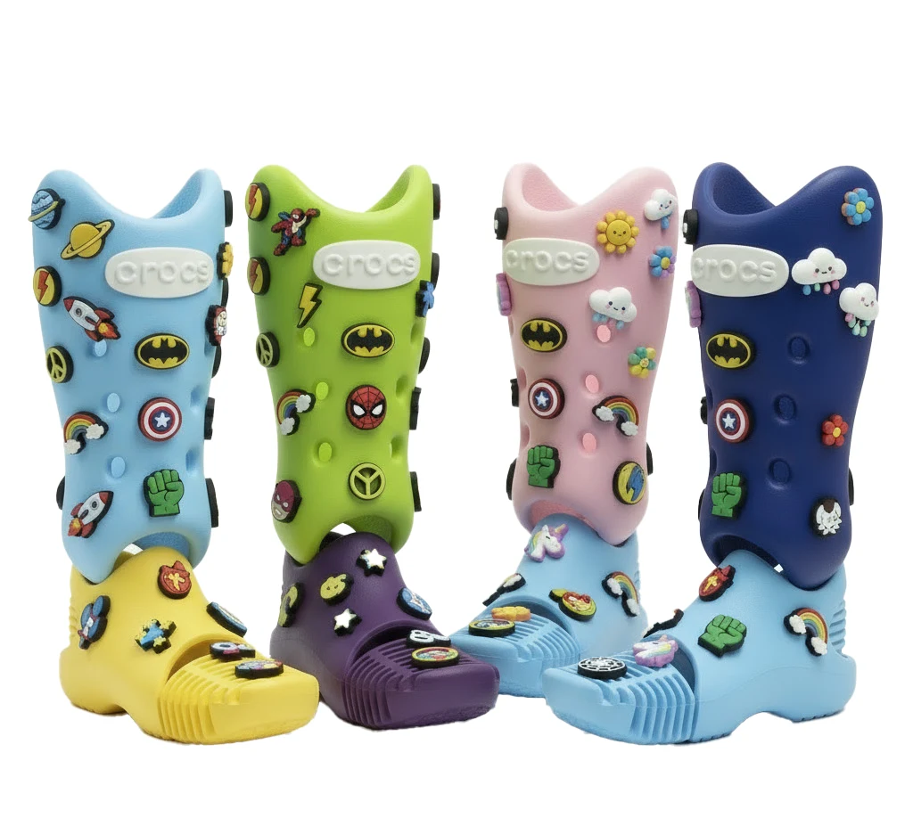
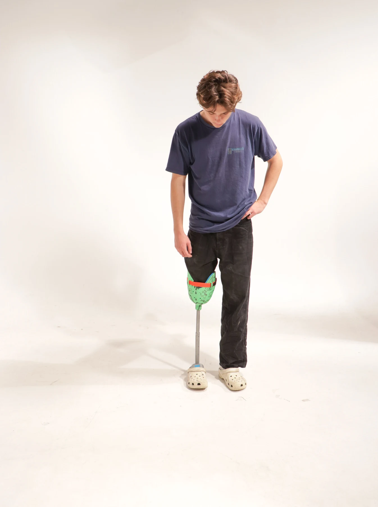
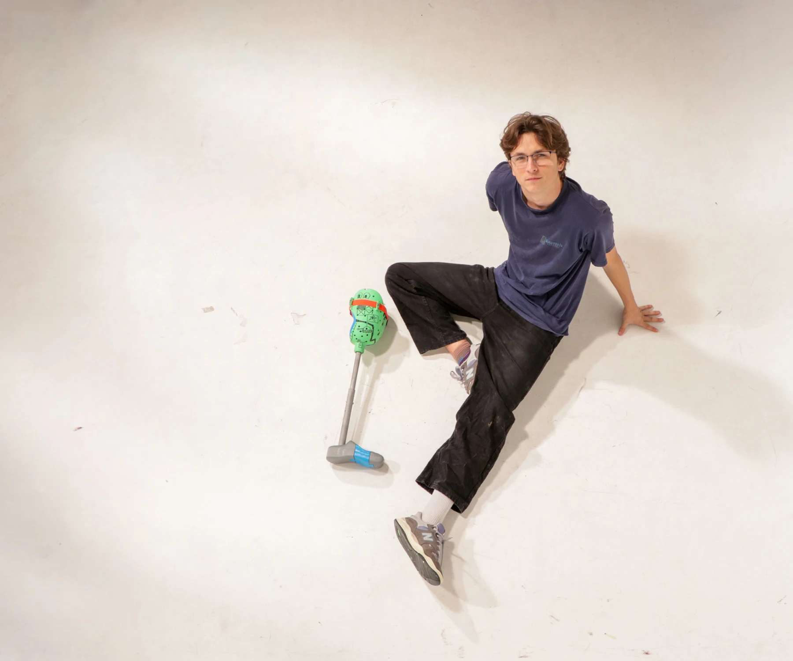
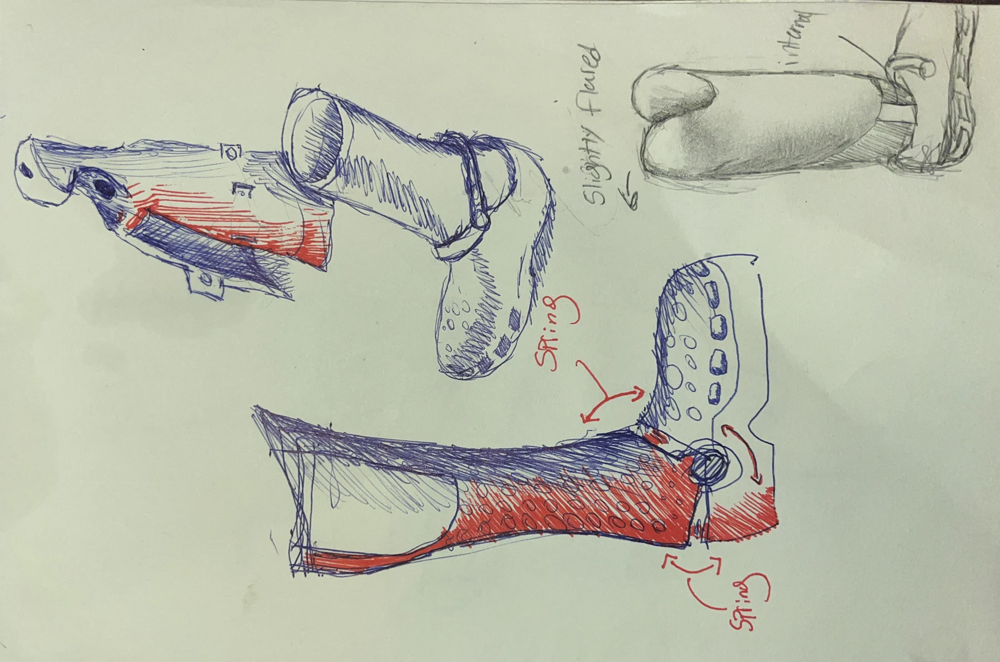
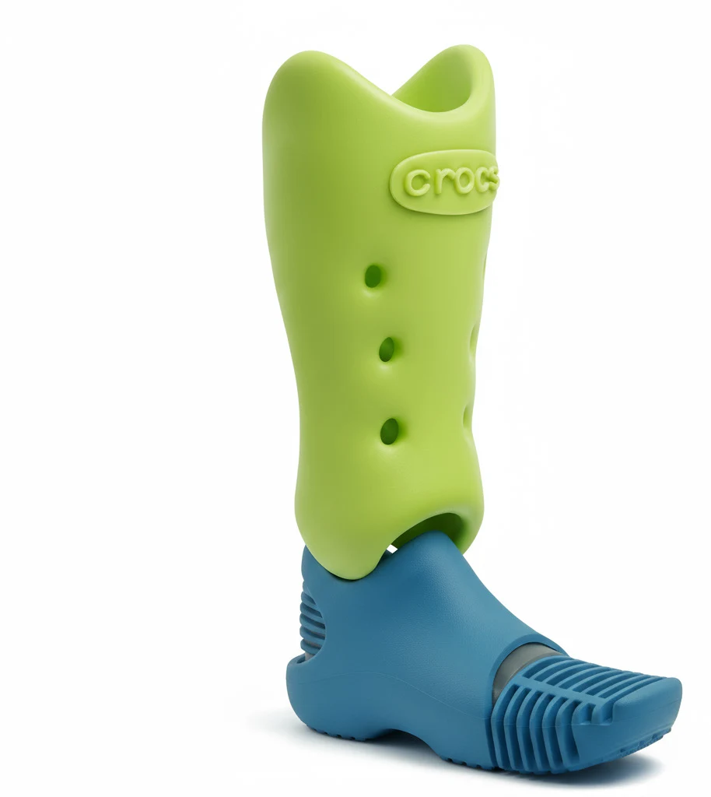

Limb It Less
A prosthetic concept exploring colour, customisation and children’s self-expression.


01 / The idea
A prosthetic with room
for personality.
Limb It Less explores how a prosthetic for children could support self-expression through colour, drawing and interchangeable accessories. The wider concept is a portable fabrication kit for use in low-resource settings.
The project combines sketches, physical prototypes and AI-assisted visual exploration. Its focus is the relationship between form, customisation and the experience of wearing a prosthetic.




02 / Development
Changing the focus.
Early versions concentrated on the visible structure and mechanism. Feedback from advisors and peers suggested that the exposed metal rod gave the design a clinical appearance, overwhelming its playful qualities.
The next iterations explored a more continuous outer form. Sketches and AI-assisted renders helped compare proportions, colours and ways to personalise the surface.


03 / Direction
A surface to make
your own.
The later concept uses a simple outer shell with openings for charms and a surface that can be customised. Slots in the proposed foot explore where the form could flex.
These images describe a design direction. The physical prototypes and concept renders represent different stages of the project.


04 / Documentation
The full development process.
The original project document includes early sketches, prototype photographs, feedback and the visual iterations that informed the final direction.
Read the project documentNext project